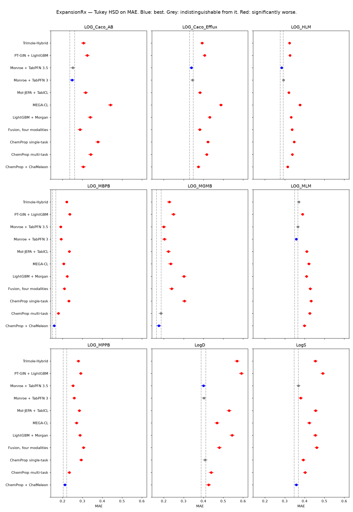
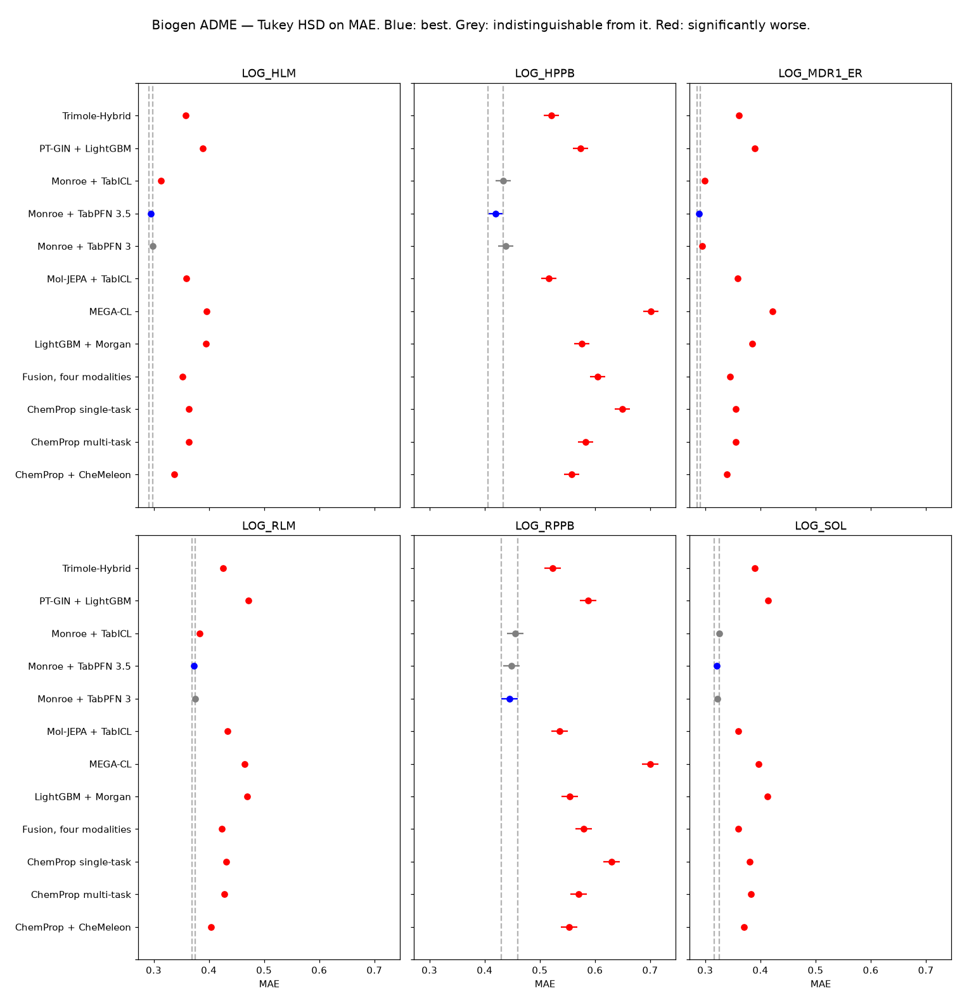

Practical Cheminformatics
Model Validation Central
Published machine learning methods for molecular property prediction, re-run on the same molecules, the same folds and the same statistics, so their claims can be read against one another instead of against whatever each paper chose to compare itself with.
The reports, newest first
9 reports from 8 studies: expansion-ml-comparison produces two, asking different questions of the same folds. Each entry links to the directory it came from.
- 3D quantum-property pre-training
Pre-training in 3D on quantum mechanics
Does pre-training a 3D transformer on quantum-mechanical properties help ADMET prediction?
Quantum pre-training beats training the same transformer from scratch on 14 of 15 endpoints, as the paper says. Against the field it is middling: roughly level with fine-tuned CheMeleon, well behind fine-tuned Atom-JEPA and Monroe + TabPFN 3.
- 3D self-supervised pre-training
Fine-tuning in 3D
Does a 3D equivariant encoder pre-trained on 19 million conformers beat the best frozen encoder?
Against its own comparators the paper's claim holds, ahead of fine-tuned CheMeleon on 38 of 45 combinations. Against Monroe + TabPFN 3 the data sets disagree: it leads on ExpansionRx and trails on Biogen, and what it wins it wins through fine-tuning, not the frozen encoder.
- Error correction
Borrowing errors
Does correcting each prediction with the known errors of similar training molecules help?
The correction works as claimed, ahead of its own uncorrected baseline on 41 of 45 combinations, but it is a small lever, a median +0.024 R². Fine-tuning CheMeleon or reading Monroe's embedding is worth far more, and MolPAIR loses to both.
- Tabular foundation models
Swapping the head
Holding Monroe's frozen embedding fixed, which in-context tabular model reads it best?
Kumo Tabular large is the best head, on top of all 45 combinations and at an eighth of TabFM's GPU time. But the head is the small lever: swapping it moves R² by a median 0.042, against 0.208 for the representation.
- Does k-NN really match modern ML?
What survives a hard split
A paper says nearest-neighbour lookup matches modern ML under every split, and that all of them collapse to a naive baseline out of distribution. Does that hold against models it did not have?
Half the paper replicates: error does climb as the splits harden, but k-NN leads none of the 18 scheme × metric combinations and Monroe's frozen encoder leads all 18. Nothing is more robust to distance; the better methods are uniformly better.
- Foundation models
Nine ways to model ADME
Which foundation model, and does it replicate?
Of four molecular foundation models only Monroe wins anything, on top of 21 of 27 ExpansionRx and all 18 Biogen combinations with no downstream training at all. The representation is worth about ten times the tabular head that reads it.
- Self-supervised pre-training
Pre-training on fingerprints
A graph network taught to predict fingerprints, against the fingerprints
Pre-training a GIN to predict ECFP wins six endpoints of fifteen and loses six, and on its own Biogen benchmark wins one and loses three. It helps where fingerprints were weak and hurts where they were strong.
- Fusion strategies
Does multimodal fusion help?
Unimodal versus multimodal, on ADME data
As the paper found, fusing four modalities barely moves accuracy, and none of the gain survives a multiple-comparison correction; what fusion buys is calibration. A single well-initialised graph network beats all 33 configurations.
- Model selection
Sixty models per fold
Is picking a model per endpoint worth it?
Choosing one of sixty candidate models per endpoint and fold loses to a single well-initialised graph network on both data sets. Nothing in its pool learns a representation, and what it picks does not replicate.
Every method, on the same folds
The studies share their folds, and the four reference arms are copied between them rather than refit, so their per-fold numbers are identical to the last bit. That is checked before anything is pooled, and it means every method below can go into one comparison — which is the whole reason for collecting them.
One Tukey HSD per endpoint, over the 25 folds, on MAE — the same metric the panels below draw, so a row and its panel can never disagree about who won. A method counts as being on top whenever the correction cannot separate it from the leading mean, so an endpoint with several methods on top gives each of them a tie rather than crowning whichever had the better mean. Only an endpoint with exactly one method on top awards a best alone. There are no bold maxima.
That rule is also why the three Monroe rows are almost never alone at the top. They differ only in which tabular model reads the same frozen embeddings, and methods the correction cannot separate take each other out of the best alone column wherever they are both on top. Read them as one method with a footnote, not as three that beat each other.
| From | ExpansionRx, of 9 endpoints | Biogen ADME, of 6 endpoints | |||||
|---|---|---|---|---|---|---|---|
| best alone | tied | worse | best alone | tied | worse | ||
| LightGBM + Morgan1, 2 | expansion-ml-comparison | 0 | 0 | 9 | 0 | 0 | 6 |
| ChemProp single-task3 | expansion-ml-comparison | 0 | 1 | 8 | 0 | 0 | 6 |
| ChemProp multi-task3 | expansion-ml-comparison | 0 | 1 | 8 | 0 | 0 | 6 |
| ChemProp + CheMeleon4, 3 | expansion-ml-comparison | 2 | 2 | 5 | 0 | 0 | 6 |
| MEGA-CL5 | expansion-ml-comparison | 0 | 0 | 9 | 0 | 0 | 6 |
| Monroe + TabPFN 36, 7 | expansion-ml-comparison | 0 | 5 | 4 | 0 | 5 | 1 |
| Monroe + TabPFN 3.56, 8 | expansion-ml-comparison | 0 | 6 | 3 | 1 | 5 | 0 |
| Monroe + TabICL6, 9 | expansion-ml-comparison | 0 | 5 | 4 | 0 | 3 | 3 |
| Mol-JEPA + TabICL10, 9 | expansion-ml-comparison | 0 | 0 | 9 | 0 | 0 | 6 |
| Trimole-Hybrid11 | expansion-ml-comparison | 0 | 1 | 8 | 0 | 0 | 6 |
| PT-GIN + LightGBM12, 1 | ecfp-pretrain | 0 | 0 | 9 | 0 | 0 | 6 |
| Fusion, four modalities13, 1 | multimodal-fusion | 0 | 0 | 9 | 0 | 0 | 6 |
The methods in print
- Ke, G.; Meng, Q.; Finley, T.; et al. LightGBM: A Highly Efficient Gradient Boosting Decision Tree. NeurIPS 2017. NeurIPS 2017
- Rogers, D.; Hahn, M. Extended-Connectivity Fingerprints. J. Chem. Inf. Model. 2010, 50 (5), 742-754. doi:10.1021/ci100050t
- Graff, D. E.; Morgan, N. K.; Burns, J. W.; et al. Chemprop v2: An Efficient, Modular Machine Learning Package for Chemical Property Prediction. J. Chem. Inf. Model. 2026, 66 (1), 28-33. doi:10.1021/acs.jcim.5c02332
- Burns, J. W.; Zalte, A. S.; Abreu, C. R. A.; et al. Deep Learning Foundation Models for Low-Data Regimes from Classical Molecular Descriptors. J. Chem. Inf. Model. 2026, articles ASAP. doi:10.1021/acs.jcim.6c01546
- Jin, T.; Jin, K.; Li, Y.; et al. MEGA-CL: A Molecular Foundation Model for Generalizable ADMET Prediction through Graph External Attention and Contrastive Learning. Preprint, 2026. arXiv:2607.24314
- Banaszewski, B.; Fitzgibbon, A. W. Monroe: A Molecular Foundation Model for In-Context Probabilistic Inference. Preprint, 2026. arXiv:2608.18982
- Hollmann, N.; Müller, S.; Purucker, L.; et al. Accurate Predictions on Small Data with a Tabular Foundation Model. Nature 2025, 637 (8045), 319-326. doi:10.1038/s41586-024-08328-6
- Prior Labs TabPFN-3.5. Technical report, 2026. priorlabs.ai/technical-reports/tabpfn-3-5
- Qu, J.; Holzmüller, D.; Varoquaux, G.; Le Morvan, M. TabICL: A Tabular Foundation Model for In-Context Learning on Large Data. Preprint, 2025. arXiv:2502.05564
- Rottach, F.; Schieferdecker, S.; Rudman, W.; et al. Mol-JEPA: A Multimodal Joint Embedding Predictive Architecture for Molecules. Preprint, 2026. arXiv:2608.22642
- Luo, Z.; Huang, D.; Shao, Y.; Yu, Q.; Li, Y. A Multimodal Representation Learning Platform for Accurate Molecular ADMET Prediction. Bioinformatics 2026, in review. doi:10.1101/2026.08.24.746660
- Money-Kyrle, S.; Dablander, M.; Hanser, T.; Werner, S.; Deane, C. M.; Morris, G. M. On Improving Graph Neural Networks for QSAR by Pre-training on Extended-Connectivity Fingerprints. Preprint, 2026. arXiv:2605.10722
- Wasswa, J.; Kajjumba, G. W.; Ramsundar, B. Unimodal vs Multimodal Learning: A Systematic Evaluation of Fusion Strategies and Model Design for Molecular Property Prediction and Uncertainty Quantification. J. Chem. Inf. Model. 2026. doi:10.1021/acs.jcim.6c01878
multimodal-fusion's 33 configurations would swamp a wide comparison and widen the correction for everyone, so it is represented by one cell of its grid chosen in advance rather than on the results: all four modalities, early fusion, LightGBM. Its own report ranks the whole grid. Counts here are also stricter than the ones in the individual reports: Tukey's correction widens with the number of methods, so pooling this many of them turns some outright wins into ties.


Lower is better, and the panels share an axis so a difference is the same length everywhere. Read down a panel rather than across them: MAE carries the units of its endpoint, and the endpoints differ in how hard they are. On ExpansionRx they are also on a log10(x + 1) scale, which is nearly linear below x = 1, so an MAE there is not a clean fold-error — every method shares the target, so the comparison holds, but the number does not convert. The Biogen endpoints arrive log-transformed at source.
What makes these comparable
Every study here is scored the same way, which is what makes the cards comparable rather than merely adjacent. Molecules are clustered, a fixed fraction is held out once, and the 25 replicates come from five repeats of a five-fold GroupKFold over the clusters in what remains. Every method sees identical training molecules in every fold and is scored on the same untouched test set, so a difference in the metrics is a difference in the method.
The statistics follow the protocol of Ash et al. and Even More Thoughts on ML Method Comparisons: distributions over folds, corrected for multiple comparisons, and no bold maxima. Where two methods cannot be separated, both are reported as tied.
Everything is run on two unrelated data sets. A comparison run once is a hypothesis, and the interesting question about any result below is which half of it replicates.
Each entry links to that study's full report and to the code that produced it. Every study directory carries its own README, its own requirements, and the per-fold metrics behind its figures, so any of them can be rebuilt on its own. Source at PatWalters/model-validation-central. Built 2026-10-16.